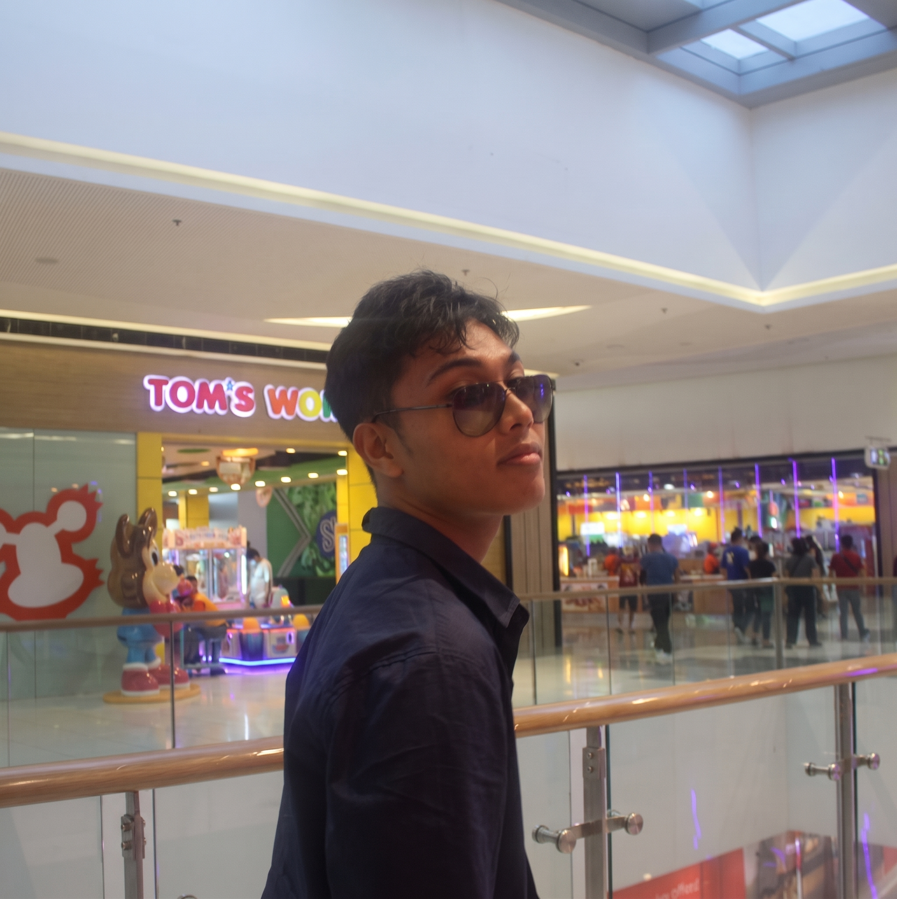

ROVIC ENGINEERING NEXT-GEN INTERFACES & FULL-STACK SYSTEMS
Fourth-year BS Information Technology specialist at the University of Cebu — Main Campus. Bridging high-contrast award-winning UI/UX design with resilient Full-Stack Web & Mobile Architecture, civic transparency platforms, AI-powered microfinance tools, and binary security analysis.

SYSTEM ARSENAL & MATRIX
UI/UX & Frontend
Backend & APIs
Data & Cloud Ops
Security & Hardware
FEATURED SYSTEMS & ARCHITECTURES
HONORS, EDUCATION & MILESTONES
🏆 Champion in UI/UX Design — OpenBudget+
Spearheaded the user experience architecture, visual design system, and interactive civic transparency workflows for OpenBudget+, earning 1st Place Champion honors at the University of Cebu ICT Congress.
Lead Programmer — PumpQ, & Catpuccino
Architected PumpQ (unified mobile fuel pre-ordering & express road service platform) and engineered Catpuccino (full-stack ASP.NET Core MVC ordering & customer platform).
BS Information Technology — University of Cebu (Main Campus)
College of Computer Studies. Specializing in Full-Stack Web & Mobile Development, Enterprise MVC Systems (C# / ASP.NET Core), Reverse Engineering & Binary Security Analysis, and TOPCIT / TESDA technical competency tracks.
INITIATE TRANSMISSION
Available for Full-Stack Software Engineering roles, UI/UX Product Design collaborations, and civic/mobile platform architecture.